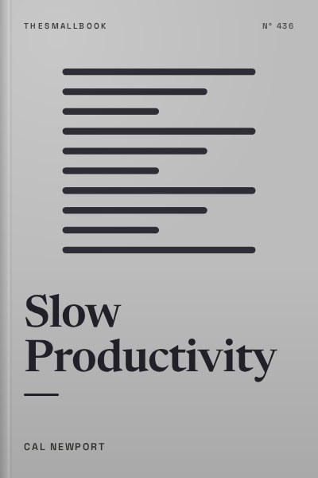

Library › Productivity
Slow Productivity - Summary & Key Lessons

Do fewer things, work at a natural pace, obsess over quality. The lost art of accomplishment without burnout.
📖 OPEN THE FULL INTERACTIVE BREAKDOWN →🌐 Read it in Hindi, Hinglish, Gujarati, Tamil & 22 more languages, with audio.
💡 The Big Idea
Knowledge work never defined productivity, so we fell back on visible busyness: answering messages fast, attending every meeting, saying yes to everything. Cal Newport calls this pseudo-productivity and argues it is burning people out without producing great work. His alternative rests on three principles. Do fewer things, so each one gets real attention. Work at a natural pace, with seasons of intensity and rest instead of constant urgency. Obsess over quality, because excellent work gives you the leverage to control your time. Drawing on writers, scientists and artists from history, he shows that the most important work has usually been done slowly.
🧠 The 9 Key Lessons
Lesson 1: The Trap of Pseudo-Productivity
Chapter 1: The Rise and Fall of Pseudo-Productivity
In factories, productivity was easy to measure: units per hour. In knowledge work, nobody could count output cleanly, so managers and workers settled for a proxy, visible activity. Fast email replies, packed calendars and late nights became signs of value. Newport argues this proxy has become toxic. Digital tools made it easy to create endless small tasks, each with its own overhead of messages and meetings. People now spend most of their day talking about work instead of doing it, and feel exhausted without having produced anything they are proud of.
📖 Example: Newport points to surveys showing that knowledge workers spend a huge share of their week in email, chat and meetings. During the pandemic, when offices moved online, calendars filled even more, and many workers reported burnout despite never having been busier. Read the full example →
⚡ Do this: Track one workday honestly. Mark each block as 'doing the work' or 'talking about the work.' Note the ratio and decide one meeting or thread you can drop.
Lesson 2: Principle One: Do Fewer Things
Chapter 3: Do Fewer Things
Every project you accept brings administrative overhead: emails, check-ins, calls, coordination. When you have too many projects, the overhead consumes the time that should go into the work itself. Newport's first principle is to strive to reduce your obligations to the point where you can easily imagine accomplishing them. This is not laziness; it is the only way to give important things real attention. Fewer commitments mean less overhead, deeper focus and better results, which in turn earn you more freedom.
📖 Example: Newport describes writers and scientists such as Jane Austen and Isaac Newton who worked on very few projects at once, often over years. In the modern workplace, he cites teams that limited work in progress, finishing one task before pulling another, and saw both speed and quality rise. Read the full example →
⚡ Do this: List every active project and commitment. Pick the top three that matter most. For the rest, decide this week whether to finish, delegate, postpone or drop each.
Lesson 3: Limit Missions, Projects and Daily Goals
Chapter 3: Do Fewer Things (Propositions)
Newport suggests limiting work at three scales. Missions: the big directions of your life, kept to a small number. Projects: the efforts that serve those missions, with only a few active at once. Daily goals: one meaningful thing to push forward each day. Additional tasks wait in a holding tank until a slot opens. This 'pull' system, borrowed from software and manufacturing, keeps your workload within your actual capacity instead of letting other people push work onto you at will.
📖 Example: Software teams using Kanban boards often cap the number of tasks in progress. When a task finishes, the next is pulled from a queue. Newport adapts this for individuals: keep a visible list of what you are working on now and a separate list of what is waiting, and refuse to let the active list grow. Read the full example →
⚡ Do this: Create two lists today: 'Active (max 3)' and 'Waiting.' Move everything else to Waiting. Only pull a new item when an active one is done.
Lesson 4: Make Overhead Visible and Charge for It
Chapter 3: Quota and Workload Transparency
One reason people overcommit is that the cost of saying yes is invisible. Newport recommends making workload transparent: share a list of what you are already doing when someone asks for more, or set quotas for recurring tasks such as reviews, interviews or committee work. Once you hit the quota, the answer is no until next period. This turns vague guilt into a clear rule and helps managers see when a person is overloaded.
📖 Example: Newport describes academics who limit themselves to a fixed number of peer reviews per year and decline politely once they reach it. Some teams publish shared boards showing each member's active load, so new tasks go to whoever actually has capacity. Read the full example →
⚡ Do this: Pick one type of recurring request you get. Set a quota for it (for example, two per month) and tell the people who usually ask.
Lesson 5: Principle Two: Work at a Natural Pace
Chapter 4: Work at a Natural Pace
Humans did not evolve to work at the same intensity every day of the year. Farmers, artists and scientists historically worked in seasons: busy periods followed by slower ones. Modern knowledge work demands relentless intensity, which is unnatural and unsustainable. Newport's second principle is to let important work unfold over timescales that make sense, with variations in intensity. Give projects more time than you think, build in quiet periods, and stop treating every week as a sprint.
📖 Example: Newport points out that Isaac Newton did some of his most famous work during a period of retreat from Cambridge during a plague outbreak, and that many celebrated writers produced books over several years with long fallow periods. Their output looks impressive on the scale of a career, not a week. Read the full example →
⚡ Do this: Double the timeline on your next personal project. Then schedule one 'slow season' in your year, a few weeks with lighter commitments, and protect it.
Lesson 6: Seasons, Rituals and Time to Think
Chapter 4: Propositions for a Natural Pace
Practical ways to slow down include working in seasons, for example, lighter summers or a quiet month after a big launch; taking regular days off the network to think; scheduling fewer meetings and more open time; and creating rituals that signal the start of deep work. Newport also suggests working with time horizons longer than a quarter, using five-year plans for meaningful projects instead of trying to rush them into a single sprint.
📖 Example: Newport describes his own practice of keeping lighter workloads during certain months and blocking whole days without meetings. He also cites creatives who used a special place, such as a cabin or a particular café, to mark the beginning of serious work. Read the full example →
⚡ Do this: Choose one ritual (a walk, a particular desk, a specific playlist) that you will use only when starting deep work. Use it for the next five sessions.
Lesson 7: Principle Three: Obsess Over Quality
Chapter 5: Obsess Over Quality
The third principle ties the other two together. When you care deeply about the quality of your work, you naturally do fewer things and give them more time. Quality also creates leverage: excellent work earns you the reputation and bargaining power to set your own terms, decline busywork and slow down. Newport argues that obsessing over quality is the best long-term strategy for both satisfaction and freedom.
📖 Example: Newport tells the story of musicians and writers whose early breakthroughs came from long periods of refining their craft. Their excellent work gave them the clout to negotiate better contracts and more time for the next project. Read the full example →
⚡ Do this: Pick one piece of work you will make truly excellent this month. Ask: 'What would the best person in my field do differently here?' and apply one answer.
Lesson 8: Improve Your Taste
Chapter 5: Raise Your Taste
You cannot produce excellent work without knowing what excellent looks like. Newport encourages raising your taste by studying the best work in your field and adjacent fields. Taste often develops faster than skill, which creates frustration: you can see the gap between your work and the best. That gap is the engine of improvement. Investing in better tools and environments can also signal to yourself that the work matters.
📖 Example: Ira Glass famously described the gap between a beginner's taste and their skill, and the need to produce a large volume of work to close it. Newport echoes this, encouraging readers to study masters closely and accept the discomfort of seeing their own work fall short for a while. Read the full example →
⚡ Do this: Find three examples of outstanding work in your field. Study one for 30 minutes, noting exactly what makes it excellent, then apply one technique to your own work.
Lesson 9: Bet on Yourself, Slowly
Chapter 5: Bet on Yourself
Newport warns against quitting everything to chase a dream before the work is good enough to support it. Instead, he recommends building quality steadily while keeping stability, then making bigger moves once there is evidence the work can stand on its own. Use quality as a signal: when people start seeking out your work, it is time to bet more. This patient approach reduces risk and keeps pressure from corrupting the craft.
📖 Example: Newport points to writers who kept day jobs while building their craft, and only left once their writing income became reliable. Their patience allowed them to focus on quality rather than rushing out work to pay rent. Read the full example →
⚡ Do this: If you dream of making your side project your main work, set a concrete signal (for example, a specific monthly income or number of clients) that will tell you it is time to leap.
✅ 5-Step Action Plan
- Cut your active projects to three and keep the rest on a waiting list.
- Set a quota for one type of recurring request.
- Double the timeline for your next meaningful project.
- Block one meeting-free day every week to think and create.
- Study three examples of excellent work in your field and copy one technique.
⚠️ When This Doesn't Work
Newport writes mainly for people with some control over their schedule: writers, academics, senior professionals. If you work in a call centre, a startup with demanding founders, or a job where your manager decides everything, 'do fewer things' can sound like a luxury. Start with what you can control, such as your side projects or your evenings, and use the transparency ideas to negotiate workload gradually.
💀 The Graveyard Proves It
💬 Best Quotes from Slow Productivity
- “Do fewer things. Work at a natural pace. Obsess over quality.”
- “Pseudo-productivity is the use of visible activity as the primary means of approximating actual productive effort.”
- “Slowness is not about laziness. It is about giving important work the time it actually needs.”
Interactive version: mark lessons as read, listen in your language, share quote cards.